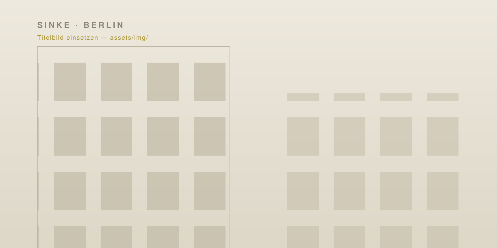

Planung & Architektur · Berlin
Planung & Architektur in Berlin — persönlich.
Umbau, Sanierung, Anbau oder Neubau: Wir planen Ihr Bauvorhaben von der ersten Idee bis zur Umsetzung.
Wer wir sind
Erfahrung aus großen Projekten – persönlich für Ihr Vorhaben.
Sinke Planung ist ein persönliches Planungsbüro in Berlin, gegründet von Planer:innen mit über 20 Jahren Erfahrung in Architektur und Planung – aus unserer bisherigen Tätigkeit, in leitender Rolle in einem etablierten Berliner Büro.
Ob Umbau, Sanierung, Anbau, Innenausbau oder Neubau: Sie sprechen direkt mit der Person, die auch plant. Wir nehmen uns Zeit, denken Kosten und Nutzung von Anfang an mit und bleiben bis zur Umsetzung an Ihrer Seite.
Leistungen
Alle Leistungen →Planung für Ihr Zuhause und Ihr Gebäude.
Referenzen
Alle Projekte →Aus unserer bisherigen Tätigkeit.
Eine Auswahl von Projekten, die wir in leitender Rolle in vorheriger Tätigkeit verantwortet haben.
„Gute Planung beginnt mit Zuhören."— Sinke Planung
Warum Sinke
Wir bauen keine Ikonen, sondern gute Häuser: Räume, die sich in ihre Umgebung einfügen, im Betrieb bezahlbar bleiben und auch in zwanzig Jahren noch funktionieren.
Die Erfahrung aus großen Projekten steckt dabei in jedem Detail – vom ersten Entwurf bis zur Baustelle.
Häufige Fragen
Planung in Berlin – kurz erklärt.
Was macht ein Planungsbüro wie Sinke Planung?
Wir übernehmen die architektonische Planung Ihres Bauvorhabens in Berlin – von der ersten Idee über Entwurf und Grundriss bis zur Begleitung der Umsetzung. Schwerpunkte sind Umbau, Sanierung, Anbau, Innenausbau und Neubauten.
Übernehmen Sie auch die Baugenehmigung?
Wir planen Ihr Vorhaben und begleiten es bis zur Umsetzung. Für die Genehmigungsplanung arbeiten wir mit einem festen Netzwerk erfahrener Fachplaner:innen in Berlin zusammen, sodass alles aus einer Hand koordiniert wird.
In welchen Berliner Bezirken planen Sie?
Wir planen berlinweit – unter anderem in Prenzlauer Berg, Charlottenburg, Zehlendorf und Mitte.
Welche Erfahrung bringen Sie mit?
Über 20 Jahre. In leitender Rolle haben wir in unserer bisherigen Tätigkeit über 2.000 Wohneinheiten sowie Schulen und Gewerbebauten in Berlin verantwortet. Diese Erfahrung bringen wir heute persönlich in Ihr Vorhaben ein.